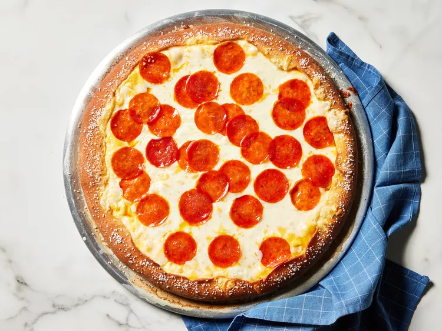

Pepperoni Pizza

Your classic American Pizza pie topped with pepperoni slices.
Ingredients
Pizza
- 1.25 cups of warm water
- 1.5 tablespoons of sugar
- 1 envelope active dry yeast
- 3.5 cups bread flour
- 1 teaspoon kosher salt
- Cooking spray
- 1 tablespoon baking soda
- 2 tablespoons hot water
- 2 cups shredded, mozzarella cheese
- 30 pepperoni slices
- 1 tablespoon unsalted butter, melted
- Pretzel salt
Cheese Sauce
- 1/3 cup whole milk
- 8 ounces process cheese, cubed
- 1 tablespoon unsalted butter
- 1/2 teaspoon onion powder
- 1/2 teaspoon paprika
- 1/2 teaspoon garlic powder
- 1/4 teaspoon kosher salt
Cooking Steps
-
Prepare the pizza by placing warm water, sugar, and yeast in the bowl of a
standing mixer. Whisk ingredients until combined, ~5 minutes
-
Add flour and salt; mix on low speed until combined. Increase speed to
mediuma and knead until dough is smooth and elastic (~5 mins)
-
Shape dough into a ball, and transfer to a large greased bowl, rotating
dough to coal all sides in oil. Cover with plastic wrap; let rest in warm
area until doubled in size (25 - 30 mins)
-
Preheat oven to 425 degrees F (230 C) with a pizza stone or baking sheet on
center rack. Grease large 15-inch pizza pan with cooking spray. Punch down
on dough, and transfer to the prepared pizza pan. Press dough to the outer
edge of the pan (roughly 15 inches diameter). Fold 1 to 1 1/2-inches of
dough's outer edge over itself to create crust.
-
Combine baking soda and hot water in small bowl. Using pastry brush, brush
top and outer edges of crust; discard any remaining baking soda mixture.
-
Bake crust on pizza stone in preheated oven until curst is golden brown (~8
mins)
-
Meanwhile prepare cheese sauce: Bring milk to a simmer in a small saucepan
over medium. Reduce heat to low; add process cheese, in batches, whisking
constantly until melted, about 5 mins. Whisk in butter, onion powder,
paprika, garlic powder, and salt until smooth. Set aside until ready to use.
-
Spead cheese sauce evenly over par-baked crust. Sprinkle with an even layer
of mozarella cheese, and top evely with pepperoni slices. Brush outer crust
with melted butter, and sprinkle evenly with pretzel salt.
-
Bake in the preheated oven at 425 degree F (230 C) until mozzarella is
slightly browned and melted and crust is cooked through (~8 mins). Remove
from oven, and let cool on pizza pan for 5 mins. Slice and serve.